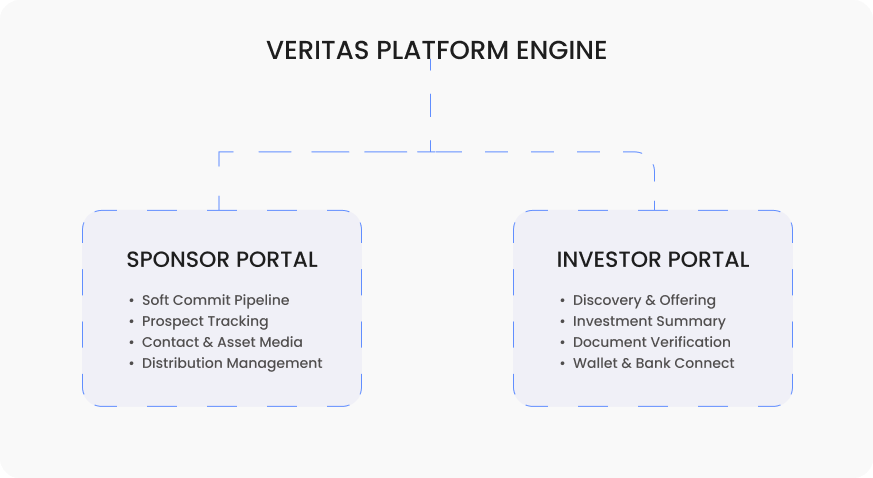
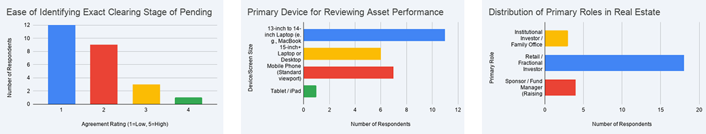
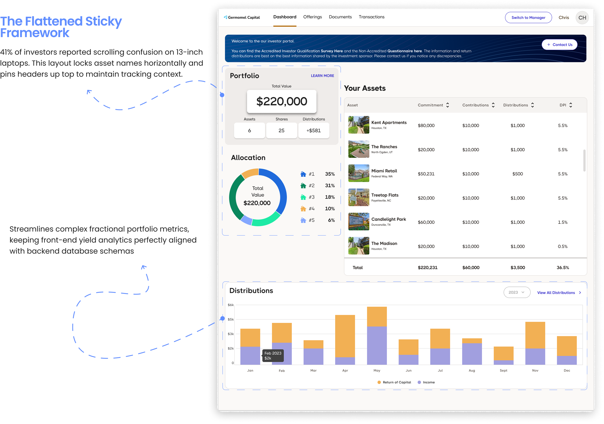
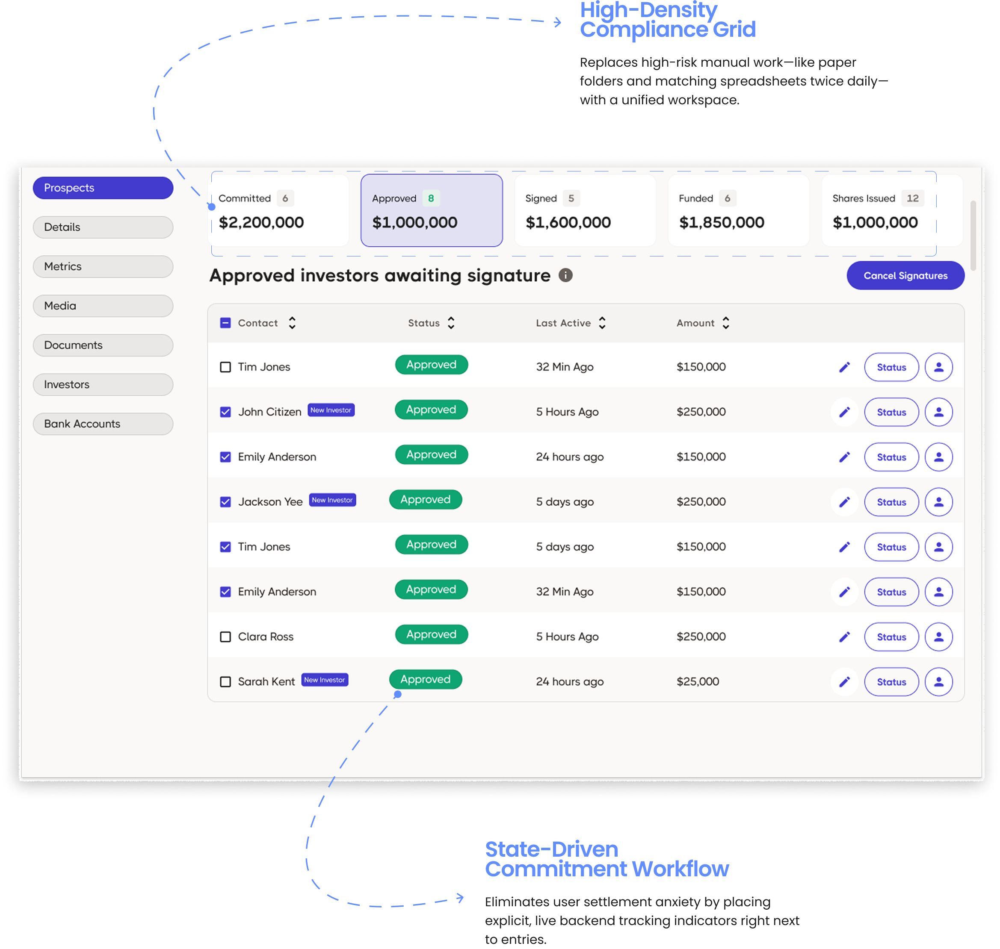
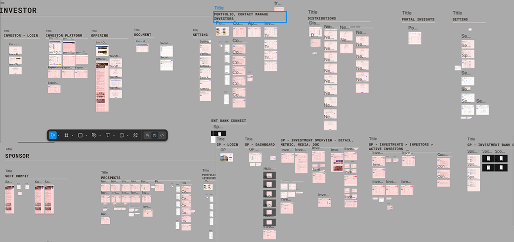

Veritas — Dual Sided
Real Estate Fintech System
Real estate sponsors were losing investor trust because complex capital data felt chaotic. Bad layout architecture in fintech looks like financial risk.
Context
Veritas is a complex B2B white-label technology ecosystem connecting institutional real estate sponsors with fractional retail investors. Instead of a isolated dashboard, the product required a dual-engine architecture: a data-heavy administrative management portal for sponsors and a streamlined validation portal for investors. The system translates multi-million dollar investments into digestible, brand-agnostic components.
System Architecture Scale

The design maps out two distinct user frameworks operating on a shared data schema. The sponsor engine handles complex administrative workflows (Soft Commit, Prospects, Distributions), while the investor engine distills that dense data into high-trust touchpoints (Offering, Wallet Connection, Ledger Tracking)
What I Was Working With?
As my first freelance system contract, I backed my design architecture by analyzing 24 raw, multi-audience survey responses alongside qualitative workflow audits of legacy platforms.

Data Verification Link: View the raw response matrix and data visualization charts
3 Data-Driven Decisions That Rewrote the Architecture:
- The Horizontal Sticky Fix: 41% of investors lost track of headers on 13-inch laptops due to nested scrolling blocks. I flat-mapped the CSS Grid layout and anchored the primary identity columns horizontally.
- The Mobile Block Pivot: 29% of retail users hit clipped rows and broken tables on mobile viewports. I engineered an automated breakpoint system that collapses rigid table rows into individual summary blocks.
- The 0-Lag Data Summary: 100% of fund managers hit browser lag and DOM freezes on large desktop data sets. I bypassed client-side rendering bottlenecks by moving full transaction logs into server-side spreadsheet downloads.
The Workflow Reality
Sponsors were tracking millions by manually matching spreadsheets twice daily and filing compliance milestones in physical paper folders. I unified these fragmented, high-risk tasks into a single real-time data grid backed by instant digital KYC/AML verification statuses.
The System Decision
I killed a multi-nested scroll container layout that looked clean in early desktop concepts.
Data-dense financial tables running across the massive Sponsor matrix cause severe DOM performance bottlenecks when forced into deep nested layout structures. I shifted the framework to a flattened, sticky-column CSS Grid architecture that scales across standard viewports and prevents performance lag during heavy client-side table re-rendering.

I eliminated complex wrapper logic for adaptive vertical scrolls, preventing clipped row errors on 13.5-inch displays.
Moved filtering logic up the hierarchy to anchor context immediately above the data, avoiding lost list states on reload.
Synchronized UI states explicitly with backend responses to eliminate blind confirmation states on performance-heavy tables.

Mapped compliance identity flags as exact 1:1 visual inputs to server-side checkouts, ensuring zero gap in security status validation.
Simplified dual-verification interactions down into standard toggle states backed by server-side error states.
Removed pagination that requires DB reload, relying instead on cached single-view window scrolling.
The Full System
What you've seen so far is only a small fraction of the final system output. It was built around React and Ant Design standards customized heavily for financial data tables. The final end-to-end multi-tenant product involved 80+ core screens. It fully covers user onboarding, program creation, smart KYC flows, document handling, fund commitment and scaling — all built on a shared system architecture to manage product complexity.

What Shipped
This isn't just a UI concept. Veritas is a live, in-production system that relies on the exact architecture I built up to scale. Multiple real estate sponsors rely on this system to run active commitments.
Handoff Notes: I act as the linking bridge between the PM and the frontend engineers. On a fast-paced contract, I structured my deliverables to rely on CSS variables mapped to design system variables in Figma, reducing front-end styling re-work.
If I Measured This Tomorrow
- System Uptime Metrics on complex parameter tables (Goal: 0% Lag across 10k rows loaded).
- Conversion Metrics for onboarding to 1st fund commitment drop-off rates for retail investors.
- User Assurance Trust within the core fund views evaluated by KYC/AML help requests.
What I'd Do Differently
As this was my first massive end-to-end multi-tenant system contract, I initially focused heavily on visual fidelity over logic constraints. To prevent the inevitable frontend edge cases scaling, I needed more direct collaboration with engineers during low-fidelity design. In the future, I validate data mapping tables directly with backend architecture schemas against real-world integration logic.